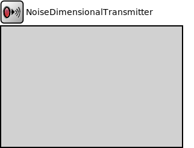

Package: inet.physicallayer.wireless.noise
NoiseDimensionalTransmitter
compound module(no description)
Inheritance diagram
The following diagram shows inheritance relationships for this type. Unresolved types are missing from the diagram.
Parameters
| Name | Type | Default value | Description |
|---|---|---|---|
| duration | double | ||
| centerFrequency | double | nan Hz | |
| bandwidth | double | 0Hz | |
| power | double | ||
| gainFunctionCacheLimit | int | 0 |
limits the number of gain functions cached for a given duration, centerFrequency and bandwidth |
| timeGains | string | "left s 0dB either e 0dB right" |
sequence of interpolation method, time, gain tuples; time can be an expression, gain is in [dB] or [0..inf); default value is a flat signal |
| timeGainsNormalization | string | "" |
determines how the time gains function is normalized, no normalization by default |
| frequencyGains | string | "left s 0dB either e 0dB right" |
sequence of interpolation method, frequency, gain tuples; frequency can be an expression, gain is in [dB] or [0..1]; default value is a flat signal |
| frequencyGainsNormalization | string | "integral" |
determines how the frequency gains function is normalized, integral normalization by default |
Properties
| Name | Value | Description |
|---|---|---|
| class | NoiseDimensionalTransmitter | |
| display | i=block/wtx |
Source code
module NoiseDimensionalTransmitter like ITransmitter { parameters: volatile double duration @unit(s); volatile double centerFrequency @unit(Hz) = default(nan Hz); volatile double bandwidth @unit(Hz) = default(0Hz); volatile double power @unit(W); int gainFunctionCacheLimit = default(0); // limits the number of gain functions cached for a given duration, centerFrequency and bandwidth string timeGains = default("left s 0dB either e 0dB right"); // sequence of interpolation method, time, gain tuples; time can be an expression, gain is in [dB] or [0..inf); default value is a flat signal string timeGainsNormalization @enum("","maximum","integral") = default(""); // determines how the time gains function is normalized, no normalization by default string frequencyGains = default("left s 0dB either e 0dB right"); // sequence of interpolation method, frequency, gain tuples; frequency can be an expression, gain is in [dB] or [0..1]; default value is a flat signal string frequencyGainsNormalization @enum("","maximum","integral") = default("integral"); // determines how the frequency gains function is normalized, integral normalization by default @class(NoiseDimensionalTransmitter); @display("i=block/wtx"); }File: src/inet/physicallayer/wireless/noise/NoiseDimensionalTransmitter.ned
 This documentation is released under the Creative Commons license
This documentation is released under the Creative Commons license